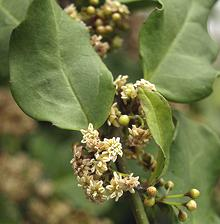
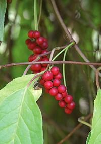
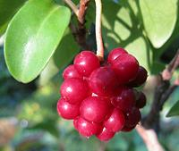
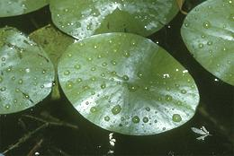
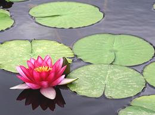
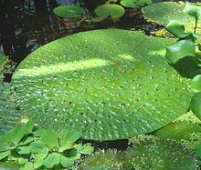
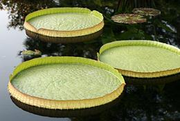

SAFARI
Users
Amborellales - Order
Amborella [Amborella trichopoda of family Amborellaceae]
This shrub is found only on Grande Terre, the main island of
New Caledonia. It is not edible, but is of great interest to botanists
because it is considered the living plant closest to the origin of
all the flowering plants.
Photo by Scott Zona distributed under license Creative
Commons
Attribution 2.0 Generic.
|
Austrobaileyales - Order
Star Anise [Bat Gok (China); Badiyan (from Persian, but adopted by other
languages); Illicium verum]
[Bat Gok (China); Badiyan (from Persian, but adopted by other
languages); Illicium verum]
This is an essential flavoring spice for Chinese cooking, and also used in Vietnam, Laos, Indonesia, and India. These licorice flavored seed pods grow on a tree native to Vietnam and southern China. For details of culinary usage, see our Star Anise page. In the early 2000s, most of the harvest went to processors for extraction of a chemical used in manufacturing the controversial drug Tamiflu®. This has caused shortages, but by 2006 production of that chemical by a bacterial method was ramping up. There are a number of other species of Illicium with similar
pods, including two in the southeastern United States, but they are
all highly toxic.
Five Flavor Berry [Bei wu wéi zi (China); Schisandra chinensis | Nan wu wéi zi Schisandra sphenanthera - both of family Schisandraceae] These climbing vines, native to the forests of Northern China and the Russian Far East, bear tiny white magnolia-like flowers. They are mainly known as powerful medicinals, particularly for improving stamina, but their berries have other uses as well. The Chinese name wu wéi zi means Five Flavor Berry, because it includes all five basic flavors: salty, sweet, sour, pungent and bitter. In China the berries are made into a wine, and in Korea they are
used to make a bright pink-red tea. In the Russian Far East many tons
of berries are processed into juices, wines, extracts, and sweets.
Photo by Vladimir Kosolapov distributed under license
Creative Commons
Attribution-Share Alike 3.0 Unported.
Kadsura [Kadsura japonica of family Schisandraceae]
This climbing vine, native to woodlands of Japan and the Ryukyu
Islands to the south. They are grown mainly as decoratives, but
the berries are edible, raw or cooked. No fruit will be set unless
both male and female plants are in the garden. The plant is evergreen
and available with dark green or variegated leaves.
Photo by KENPEI distributed under license
Creative Commons
Attribution-Share Alike 3.0 Unported.
|
Nymphaeales - Order
This order contains three families of aquatic plants, some of which have culinary uses. They have left ample fossil evidence since the Cretaceous, possibly as far back as 112 million years. The order contains 11 genera and between 70 and 90 species.
Watershield [Chún cài (China); Junsai (Japan); Annonaceae of family Cabombaceae]
This water plant is native to North America, northern South America,
East Asia and India. Flowering is interesting. On the first day the
flower stalks extend out of the water bearing female flowers. At the
end of the day the stalk withdraws, and on the following day it
extends again with male flowers. This plant is cultivated in China,
and is used in the popular Hangzhou dish "West Lake Water Shield Soup".
Photo by USDA-NRCS PLANTS Database = Public Domain
.
Water Lily [genus Nymphaea (more than 35 species) of family Nymphaeaceae] Water lilies are native to the Americas, Europe, Asia, Africa and Australia. While some are called "Lotus", they are not at all related to the true Lotus (genus Nelumbo). The two are actually easy to tell apart. Water lily leaves float on the surface and generally have a deep notch, usually extending in to the leaf stem. Lotus leaves are held above the water and are completely circular with a central stem (no notch). Lotus also has a wide conical seed capsule often seen in dried flower arrangements. Young leaves and flower buds can be cooked and eaten. The seeds are nutritious, high in starch, protein and oil. They can be roasted and popped, or ground into flour. The Egyptian Blue Water Lily (Egyptian Blue Lotus; Nymphaea
caerulea) flowers have a lightly psychoactive effect, mainly as
a sedative. Petals and whole flowers of this plant are used to make
teas and to flavor wine and martinis. One species, Nymphaea
odorata subsp. tuberosa, native to the southeastern United
States, produces potato-like tubers which can be cooked and eaten.
Photo © i0137
.
Foxnut [Gorgon Nut; Makhana (Hindi/Punjabi); Makhana, Nikori (Assam); Onibas, Onibasu (Japan); Euryale ferox of family Nymphaeaceae] Seeds of this plant have been used as human food since at least 750,000 years ago. They are currently an important crop in India and China, and also used in Korea, Japan and the Russian Far East. The pads, which can grow to more than 3 feet across, are green and spiky on top, purple on the bottom. In northern India, the seeds are collected in the late summer and
early autumn. They may be eaten raw or cooked, and are often roasted
and popped for use as a snack. They may be ground into flour used to
make a porridge called makhane ki kheer which is often
presented as a religious offering. In China the seeds are used in
medicinal soups which are supposed to improve male potency and
retard aging. In India, a technique for growing this plant as a field
crop has recently been developed.
photo by Montilre distributed under license Creative
Commons
Attribution-ShareAlike v3.0 Unported.
Victoria [Victoria amazonica, Victoria cruziana, Victoria mattogrossensis]
Native to South American river basins, these water lily have striking
rimmed floating leaves sometimes exceeding 9 feet across.
V. amzonica is native to the Amazon basin of Brazil and the
only slightly smaller V. cruziana is native to the
Paraná river basin of Paraguay. V. mattogrossensis is
almost identical to V. cruziana but has larger seeds and lives
in the Pantanal wetlands of central South America. I have not seen
any references to using the seeds as food, but know of no evidence
that they haven't been. These plants are very popular in botanical
gardens.
Photo © i0136
.
|